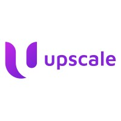

Daffodil International University
B.Sc. in Software Engineering (Major in Data Science)
CGPA 3.68
JUNIOR SOFTWARE ENGINEER / DHAKA, BANGLADESH
I build intelligent software solutions by combining software engineering, machine learning, and data-driven problem-solving. My interests include applied AI, data analysis, and building practical systems that turn data into meaningful insights.
ABOUT
I’m a software engineer with a foundation in Software Engineering and Data Science. At UpscaleBD, I build AI-enabled backend products spanning interview automation, career guidance, computer vision, and data analytics.
Where I built my foundation.
B.Sc. in Software Engineering (Major in Data Science)
CGPA 3.68
My professional journey.

1 yr 5 mos · Remote
Full-time · Bangladesh
Internship · Dhaka, Bangladesh
6 mos · Dhaka, Bangladesh
Part-time · Daffodil International University-DIU
Good work grows with a team.
I enjoy creating spaces where people can learn, collaborate, and put their skills to work.
STUDENT LEADERSHIP
DIU Software Engineering Club
Code Trap Programming Contest
Selected work in AI and data.
Built at UpscaleBD and beyond.
FEB 2026 — APR 2026 · UPSCALEBD
Backend for a career guidance platform, connecting candidate profiles with practical career recommendations.
PYTHON · FASTAPI
NOV 2025 — MAR 2026 · UPSCALEBD
An AI-powered interview platform that generates job-specific questions and evaluates candidate responses.
PYTHON · FASTAPI · LLM APIs · LANGCHAIN · POSTGRESQL · REDIS
DEC 2025 — FEB 2026 · UPSCALEBD
Led the backend for a data dashboard built to filter, explore, and download more than 500,000 market-related sales records.
FASTAPI · PANDAS · DUCKDB · POSTGRESQL
MAY 2025
An AI documentation assistant. Add a documentation URL and ask questions in natural language.
PYTHON · LANGCHAIN · LANCEDB · STREAMLIT
FEB 2025
A university admission portal with an intelligent chat assistant for real-time student support.
PYTHON · FLASK · POSTGRESQL
UPSCALEBD PROJECT
An API for face detection, verification, and similarity scoring using the InsightFace Buffalo model.
FASTAPI · INSIGHTFACE · OPENCV
Tools and methods I use to build useful things.
Python · FastAPI · Flask · NestJS · JavaScript · C · C++
RAG · Vector Embeddings · Semantic Search · NLP · Prompt Engineering · AI Agents · LLM Integration · Computer Vision · Image Segmentation · LangChain · Phidata · MCP
EDA · Data Preprocessing · Feature Engineering · Supervised Learning · Unsupervised Learning · Classification · Clustering · Model Evaluation · Hyperparameter Tuning · Precision · Recall · F1-score · ROC-AUC · Feature Scaling · PCA
PostgreSQL · MySQL · Redis · Pinecone · ChromaDB · LanceDB · Qdrant · Airbyte
Docker · Git & GitHub · AWS S3 · MinIO · Postman · Jira · Pandas · DuckDB
Business Analysis & Process Management Coursera · 2024
Generative AI Mastermind Outskill
Organizer DIU Software Engineering Club · Code Trap